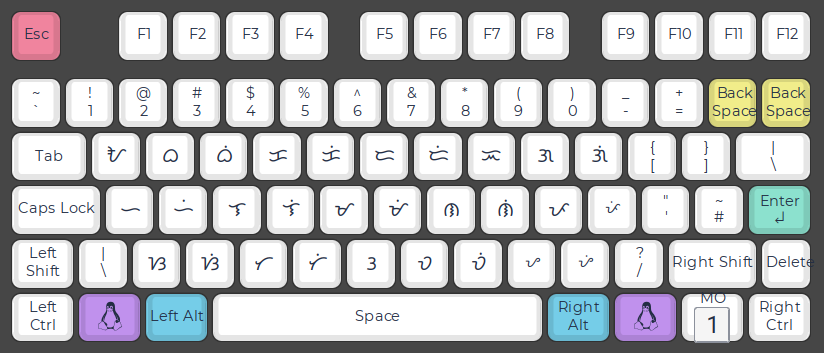

I made an input method to write Baybayin, a syllable-based writing system, using Roman letters on a hardware keyboard. Banner photo lifted from a Reddit post showing Baybayin keycaps. This post is about a real Baybayin keyboard though.
The writing system
Baybayin is an ancient writing system in which a consonant-vowel syllable is written as one letter — it is an abugida. By default, letters have an inherent vowel which is /a/. To indicate a different vowel, a dot is added above or below the letter.
- ᜃ: The base letter on its own is the consonant plus the vowel ‘a’.
- ᜃᜒ: A dot above makes it end with ‘i’ / ‘e’.
- ᜃᜓ: A dot below makes it end with ‘u’ / ‘o’.
- ᜃ᜕: A slash cancels the vowel (it’s called a virama).
An example of a full word is ᜆᜆ᜕ᜎᜓ, which means the number three.
HTML tip: I’m using the <ruby> element to annotate Baybayin pronunciation in this post, similar to furigana for Japanese.
Input design
There are many ways to design an input method for this writing system on a keyboard. The most straightforward would be to have a key for each letter. Assign every possible letter-diacritic combination its own key. There’d be a total of 63 resulting letters, which is a bit too much for a keyboard. For comparison, the Latin alphabet A-Z only has 26 letters.
Layer or modes could help, accessed by holding the Shift or Fn key — after all, the Latin alphabet actually has 52 distinct symbols, counting both upper and lowercase.

In this design, pressing Shift would change the vowel endings.
Or we could assign only the 17 base letters and the 3 vowel diacritics for a total of 20 keys for input. This would be a pretty efficient layout, and it’s the one used by Google’s mobile keyboard Gboard. Some logic on top of this would be required to combine diacritics and letters.
 Gboard Baybayin layout
Gboard Baybayin layout
However, both of the above would require learning a whole new keyboard layout, wasting years of Latin alphabet-based muscle memory. For me who primarily uses the Latin alphabet for typing, this is worth considering.
Let’s say I wanted to type in romanised alphabet, like romaji for Japanese or pinyin for Chinese. What if the keyboard itself can be programmed to convert keystrokes directly into Baybayin outputs? Implementing this on the hardware presents a nice challenge; one keypress would no longer directly correspond to one character.
My solution
I implemented this on top of a QMK firmware base, making use of its neat Unicode API. This runs my keyboard’s microcontroller.
It’s a pretty basic solution, just a bunch of if-elses and variables. We don’t need a buffer or a trie or whatever data structure. It only needs to know about the last pressed key. Well, it’s a buffer of length 1.
void on_key_press(uint16_t keycode) {
bool curr_cons = is_consonant(keycode);
bool prev_cons = is_consonant(prev_keycode);
bool curr_vowel = !curr_cons;
// special case for NG
bool is_ng = prev_keycode == KEYCODE_N && keycode == KEYCODE_G;
// standalone vowel
if (curr_vowel && !prev_cons) {
send_unicode(get_baybayin_unicode(keycode));
}
// initial consonant
else if (curr_cons && !is_ng) {
send_unicode(get_baybayin_unicode(keycode));
send_unicode("◌᜕"); // virama, because no vowel initially
}
// vowel after consonant
else if (curr_vowel && prev_cons) {
backspace(); // remove the initial virama
if (keycode == KEYCODE_I || keycode == KEYCODE_E) {
send_unicode("◌ᜒ");
} else if (keycode == KEYCODE_U || keycode == KEYCODE_O) {
send_unicode("◌ᜓ");
}
// KEYCODE_A emits nothing since /a/ is the default vowel
}
// NG digraph
else { // is_ng
// replace previous N with the letter for NG
backspace(); // remove virama
backspace(); // remove ᜈ
send_unicode("ᜅ");
send_unicode("◌᜕");
}
prev_keycode = keycode;
}
The code shown here is just the core loop for readability. Not shown is how to handle interference from other keys such as Backspace and Arrow keys and other housekeeping.
Housekeeping
Whenever a non-alphabet key is pressed, I just reset all state and skip further processing. This solves keyboard shortcuts: if I press Ctrl + S I want to save, not output ᜐ᜕.
This also solves a stale prev_keycode. When you press Backspace for example, prev_keycode is no longer accurate. A buffer would actually help here, but it’d unnecessarily complicate the code. Cursor movement keys ←, →, or any other non-letter key for that matter, 1, ., F2, etc.; all reset state.
This cannot catch any state-invalidating actions that happen outside the keyboard, like selecting text with the mouse! A timeout takes care of these cases. After a short time without typing, state is reset.
Essentially, we only want to convert into Baybayin when continuously typing sequences of letters. Otherwise, it should behave like a regular keyboard.
The full working code is in my QMK fork on GitHub.
Unicode encoding
The way the Unicode Consortium designed the encoding of the Tagalog (Baybayin) Unicode block made this solution pretty straightforward. The vowel-modifier diacritics are combining characters, which means they can just be output separately, right after the base character. There are no precomposed consonant-vowel symbols.
ᜆ + ◌᜕ = ᜆ᜕
The word processing application or text renderer on the computer is what actually renders that sequence of characters as one combined symbol. In a way, one keypress still corresponds to one output character, except for a few special cases.
Special case: N + G
One special case is the letter ᜅ, representing the consonant /ŋ/. In English this sound is represented by two letters ‘ng’. This romanisation breaks the rule of 1 Roman consonant letter to 1 Baybayin base letter. For example, ‘ngiti’ (meaning ‘smile’) is written as ᜅᜒᜆᜒ. This special case is solved by backtracking: sending a signal to the computer to erase the previous N.
Backtracking
To backtrack, we just send a virtual Backspace to the computer. Coming from the keyboard, it will be indistinguishable from a real Backspace keypress.
Backtracking is a thing mainly because the virama (‘vowel-killer’) is always output after typing a consonant. This is because when the user presses a consonant, we don’t know yet whether they’re going to type a syllable or stop at that point. Since base letters have an inherent vowel, we must immediately kill the inherent vowel with a virama when typing consonants. Only the next key will decide — we can backtrack the virama by then.
The following simulation illustrates how the keyboard-based solution handles backtracking:
Input
Reported events with backtracking indicators
Code points
So pressing, say, the M key should not output just the base letter ᜋ, but the letter + virama ᜋ᜕ at once. If you press A next, it would actually output a Backspace, erasing the virama and leaving ᜋ as intended. If you had pressed I, a Backspace is sent along with the I vowel diacritic ᜒ, producing ᜋᜒ.
Because of the inherent vowel in most abugidas, a backtracking design seems to be used in other romanised input methods as well, such as Anjal, a romanised input method for Tamil.
Why not a buffer instead of backtracking?
Buffering keystrokes would remove the need to backtrack outputs, at the cost of responsiveness. In that setup, pressing a consonant would produce no glyph at all until the following key disambiguates the syllable and flushes the output. Loss of immediate visual feedback would make the keyboard feel unresponsive and breaks the rhythm of typing.
Input buffering demonstration!
One of the downsides of a hardware-based solution is that we can only communicate via keycodes1. A software-based input method editor (IME) doesn’t have these restrictions; it can easily edit the string, access the undo stack, get the currently selected text, and more. This would eliminate the need for aggressive state invalidation and timeouts. There are pros and cons.
Why not implement a software IME?
Because it’s more fun to hack on keyboard firmware!
More seriously, implementing this on the hardware makes it portable. Not that I often need to write Baybayin, but I use multiple computers with a KVM switch. Software input methods are very OS- or application-dependent. (On Linux, it depends on even more things, such as your desktop environment, GTK or QT, X or Wayland, you name it.) This input method lives in my keyboard. I could plug my keyboard into any computer that supports arbitrary Unicode input1 and not have to install or reimplement anything.
Someone did make an input method for Baybayin and other Philippine scripts for Linux (Github).
1How does a keyboard even output Unicode?
Technically, it can’t. It requires a certain understanding with the computer OS.
You know the Alt codes in Windows where you can summon any character by their code number? The keyboard basically types that sequence of keystrokes in quick succession when we say ‘send unicode’. This abstraction is all done by QMK, supporting Windows, Linux, and Mac’s Unicode input method.
To enter U+1700 on Linux for example, the keyboard rapidly sends the following keystrokes in order: Hold Ctrl. Hold Shift. U. Release Ctrl. Release Shift. 1. 7. 0. 0. Enter. This outputs a ᜀ.
With all of the above logic, when I type TA, the actual keycodes sent are: CtrlShiftU1706EnterCtrlShiftU1715EnterBackspace
The same Unicode API from QMK powers emoji buttons in my keyboard!
Can this be generalised to other abugidas?
Baybayin is a relatively simple script, so the implementation here might be on the simpler side. Complications might come in the form of consonant clusters or different ways to join glyphs.
The implementation depends heavily on the Unicode encoding of the script. From what I’ve seen, many other abugidas have been designed in a similar way having vowels encoded as combining characters that modify base consonants. So there’s probably a common pattern of implementation.
See also
Source code
My QMK fork on GitHub